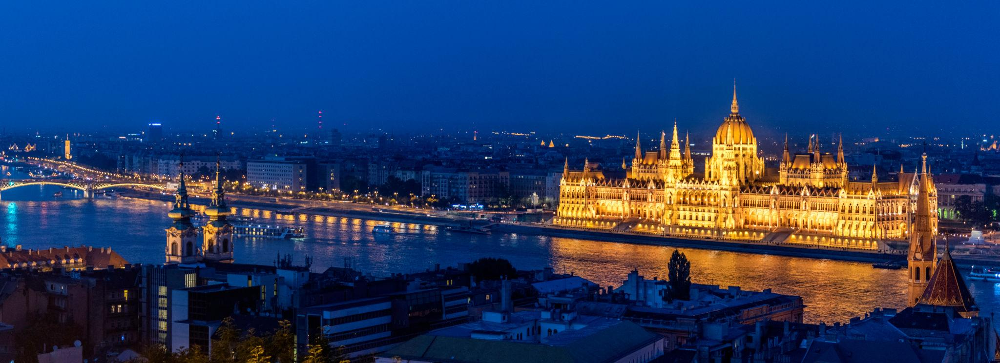
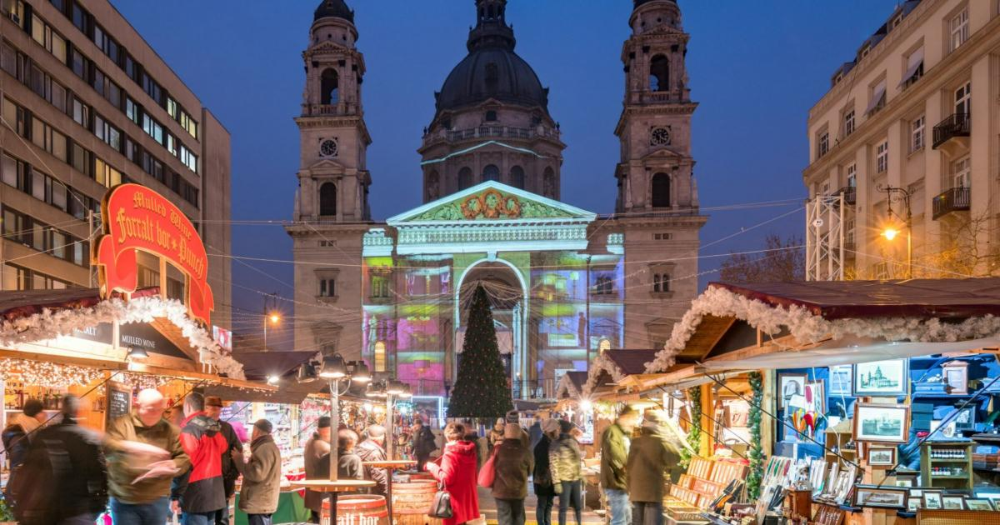
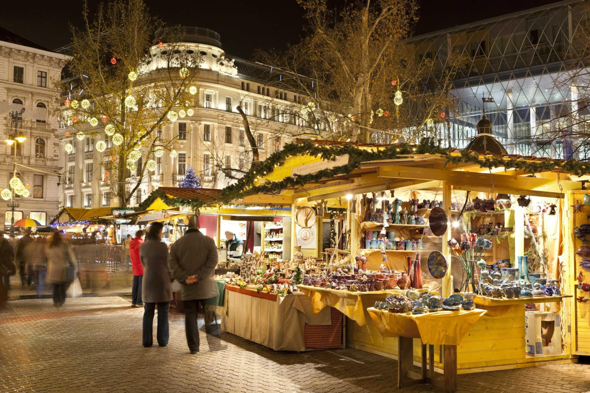
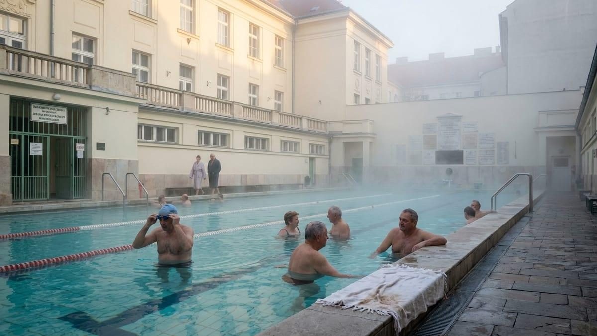
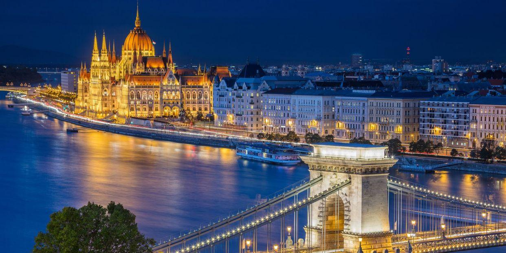
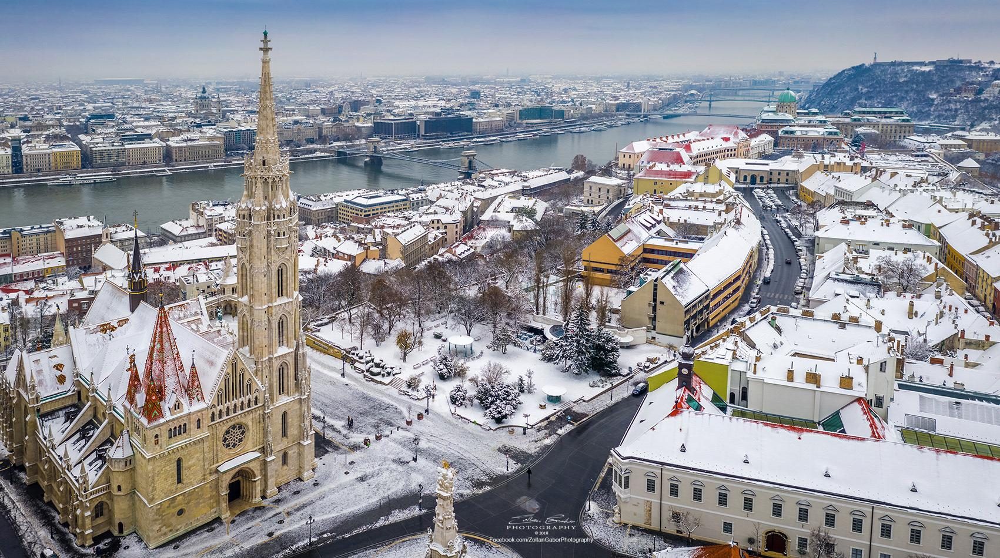

BUDAPEST, IN WINTER
Thermal waters, glowing streets & the magic of the Danube.
A CITY OF LIGHTS AND LEGENDS
Budapest in winter is a city full of contrasts. Grand architecture rises along the Danube, historic thermal baths offer a warm escape from the cold, and Christmas markets bring the streets alive with festive lights and flavours. We'll spend two memorable days discovering the city's beautiful landmarks, relaxing in its famous thermal waters and soaking up the magic of a Hungarian Christmas.
THE MAGIC OF BUDAPEST'S CHRISTMAS MARKETS

ADVENT BAZILIKA
Set against the magnificent St Stephen's Basilica, this is one of Budapest's most enchanting Christmas markets. Festive wooden stalls, Hungarian delicacies, sparkling decorations and a spectacular illuminated basilica create a truly magical winter atmosphere.
VÖRÖSMARTY SQUARE
In the heart of the city, Vörösmarty Square comes alive with traditional Hungarian crafts, festive food and charming Christmas stalls. A wonderful place to wander, sample local treats and experience Budapest's festive spirit.

A THERMAL ESCAPE AT LUKÁCS BATHS

One of the experiences we're most looking forward to is a visit to the historic Lukács Thermal Baths. Budapest is famous for its thermal waters, and there's no better way to escape the winter chill than to relax in its warm pools. A little indulgence and a memorable Hungarian experience.
THE BEAUTY OF THE DANUBE
Few cities look as beautiful as Budapest after dark. We'll explore the banks of the Danube, admire the magnificent Hungarian Parliament and take in the breathtaking views of the bridges and historic buildings glowing against the winter night.

A JOURNEY THROUGH BUDAPEST'S HISTORY

Across the river, the historic Buda Castle district offers a different side of the city. We'll wander through its charming streets, admire the fairytale towers of Fisherman's Bastion, visit the beautiful Matthias Church and enjoy spectacular views over the Danube and Pest.